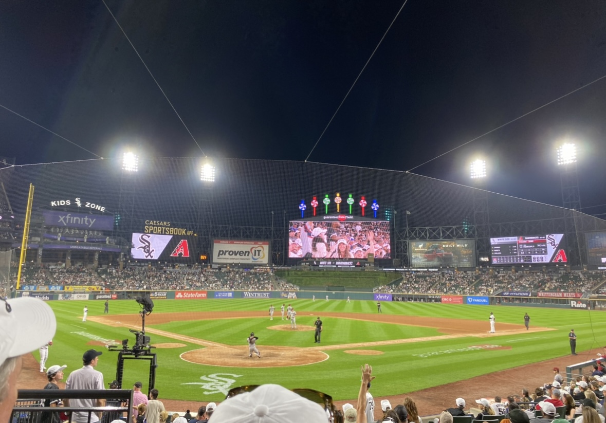

There are some sports that I like to watch, and some sports that I prefer to play.
Volleyball
I have played volleyball since 5th grade. First, I started to play volleyball at my middle school. Then, I started to play indoor club volleyball. Eventually, I began playing 2v2 beach volleyball. I played competitively all thoroughout high school. In college, I play intramural volleyball with friends. I like to watch Wisconsin's volleyball team and the USA volleyball team.
Here is a link to the Badger volleyball schedule: Wisconsin Volleyball Scedule
Football
I like to watch football both on TV and in person. I like to watch the Wisconsin Badgers.
Baseball
I am a White Sox fan. My family and I sometimes go to their games.

The image above is a picture I took at a White Sox game of their stadium, Gaurenteed Rate Field.